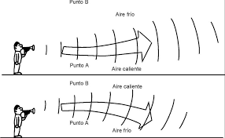

Cuando un sonido pasa de un medio a otro, se produce refracción. La desviación de la onda se relaciona con la rapidez de propagación en el medio. El sonido se propaga más rápidamente en el aire caliente que en el aire frío. Es la desviación que sufren las ondas en la dirección de su propagación, cuando el sonido pasa de un medio a otro diferente. La refracción se debe a que al cambiar de medio, cambia la velocidad de propagación del sonido.
La refracción es la curvatura de las ondas cuando entran en un medio donde su velocidad es diferente. La refracción con el sonido no es un fenómeno tan importante como con la luz, donde es responsable de la formación de imágenes por lentes, por el ojo, cámaras, etc. Sin embargo la curvatura de las ondas sonoras es una fenómeno interesante en el sonido.

Prodrias ver este video para poder entender mas sobre el tema